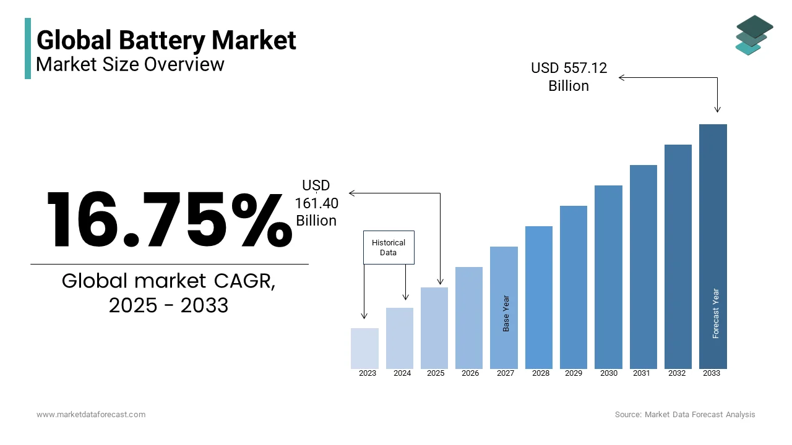
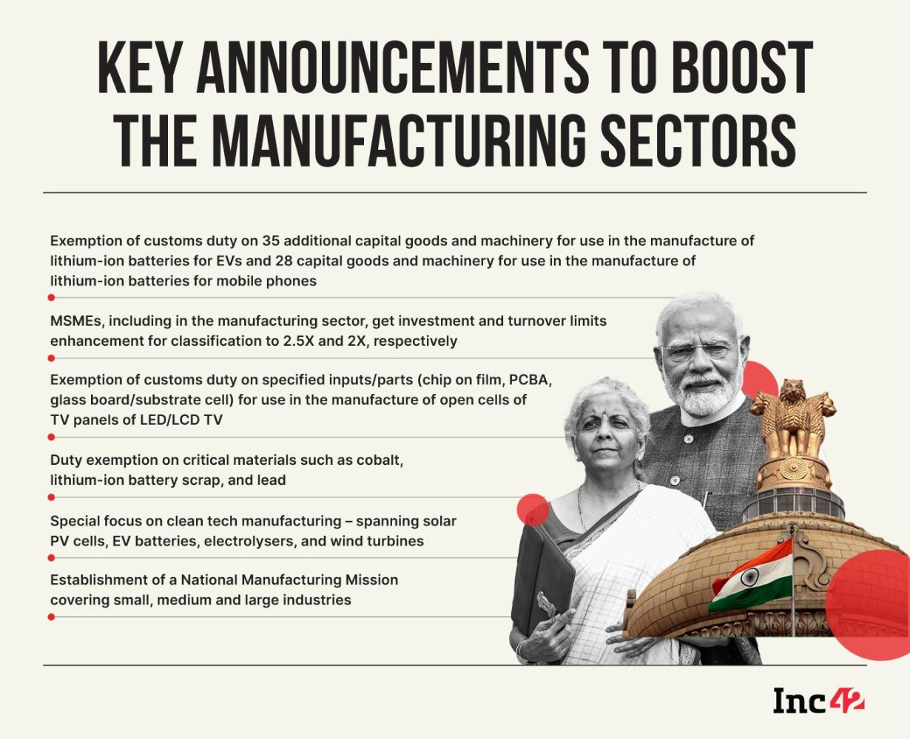
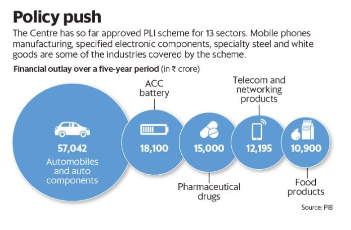
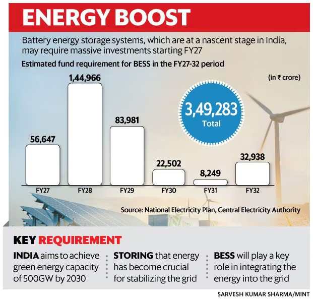

Electric cars zipping past, homes powered by solar batteries, and charging stations as common as petrol pumps. Sounds futuristic? Well, 2025 is about to make it real for India! The battery industry is not just growing — it’s exploding.
And guess who’s steering this boom?
Public policy. India’s government is laying the groundwork for a massive shift, and if you’ve ever wondered how policy can shape technology and innovation, this is a front-row seat.
The Global Battery Market Overview
Globally, the battery market is on fire, projected to cross $250 billion by 2030. Major players like China, the USA, and Europe are sprinting ahead. But here’s the kicker — India is now entering the race with serious muscle.
India's Place in the Global Market
India's battery industry is witnessing a transformative phase in 2025, driven by robust public policy, private investments, and a focus on sustainability. Here’s how public policy is shaping the growth of this critical sector.

The Policy Landscape: Key Initiatives Driving Growth
The Union Budget 2025 Announcements
The Union Budget 2025 has introduced substantial changes that are expected to have enduring effects on lithium-ion battery manufacturing operations within India. A significant aspect of this budget is the elimination of the Basic Customs Duty (BCD) on several fundamental materials essential for lithium-ion battery production.
These critical minerals include cobalt powder, lead, zinc, and lithium-ion battery scrap, among other materials. Previously, the import of these materials was subject to taxes ranging from 2.5% to 10%, which significantly increased the manufacturing costs for battery plants operating in India. The removal of these import taxes directly translates to lower operational costs for domestic manufacturers, providing them with a significant competitive advantage.
Furthermore, the 2025 Budget introduced an exemption policy for 35 essential manufacturing capital goods, which includes machinery and equipment required to establish new EV battery production facilities.

Production-Linked Incentive (PLI) Scheme
The government’s PLI scheme for advanced chemistry cell (ACC) batteries has been pivotal in attracting investments from Indian and global companies. By 2025, India is on track to achieve a battery production capacity of 25 GWh, with plans to scale up to 50 GWh by 2030. This initiative supports domestic manufacturing while reducing dependency on imports.
The PLI scheme is putting serious money on the table — over ₹18,000 crore — to reward manufacturers based on output. It’s like giving them a trophy and a cash prize for scaling up.
The active participation of major industry players such as Reliance Industries Limited , Ola Electric , Tata Group , and Exide Industries Limited in expanding their lithium-ion battery manufacturing capacities further underscores the positive influence of the PLI scheme and the overall favorable policy environment created by the government.

Support for Battery Recycling
Policies promoting battery recycling are fostering a circular economy. Companies like Attero Recycling , LICO Materials Private Limited are leading efforts to recover valuable materials from end-of-life batteries, reducing electronic waste and import dependency.
EV Adoption Targets
India's goal of achieving 30% EV penetration by 2030 is supported by policies that encourage affordable and sustainable battery solutions. These efforts are expected to lower costs and make EVs more accessible to the masses.
The Push for Battery Energy Storage Systems (BESS)
Beyond electric vehicles, the government is also actively promoting the deployment of Battery Energy Storage Systems (BESS) as a critical component for ensuring grid stability and facilitating the greater integration of intermittent renewable energy sources such as solar and wind power.
To overcome the high upfront costs associated with BESS projects, the government has launched a significant Viability Gap Funding (VGF) program with an outlay of INR 37.6 billion to support the installation of 4 GWh of BESS capacity by the financial year 2026. Additionally, the government is considering other potential incentives such as subsidies and tax breaks to further encourage investments in BESS deployment.
Innovative business models like Battery as a Service (BaaS) are also being explored as a means to eliminate the financial barriers associated with battery ownership for energy storage applications, making it more accessible for consumers and businesses.

Emerging Opportunities in the Battery Sector
- Gigafactory Expansion Investments in gigafactories, such as Exide's partnership with SVOLT Energy Technology (Europe) GmbH , are enhancing domestic production capabilities. These facilities are expected to cater to the growing demand for EVs, energy storage systems, and consumer electronics.
- Energy Storage Systems (ESS) With India’s renewable energy grid expanding, the integration of Battery Energy Storage Systems (BESS) is becoming critical. The BESS market is projected to grow at an 11.41% CAGR by 2032, underscoring its importance in stabilizing renewable energy supply.
- Export Potential India is positioning itself as a global hub for battery exports by leveraging advancements in ESG compliance and cutting-edge technologies like solid-state batteries.
Challenges Ahead
Despite significant progress, challenges remain:
- Raw Material Dependency: India still relies heavily on imports for lithium-ion components, necessitating diversification of supply chains and partnerships with global allies.
- Technological Innovation: While strides have been made in next-generation chemistries, further R&D is required to address raw material scarcity and improve performance metrics like range and charging speed.
Future Vision: What 2030 Could Look Like
By 2030, India could be home to battery gigafactories, buzzing EV highways, and renewable powerhouses. The foundation laid by 2025 policies will make that vision a reality.
Conclusion: The Road Ahead
The battery industry boom in India isn’t happening by chance — it’s being orchestrated by smart, future-focused public policies. With government support, private investments, and innovation working hand in hand, 2025 will be remembered as the year India powered into the future. If you’re an entrepreneur, investor, or just someone excited about clean energy, this is your moment. The stage is set. The lights are on. The battery revolution is about to electrify India!